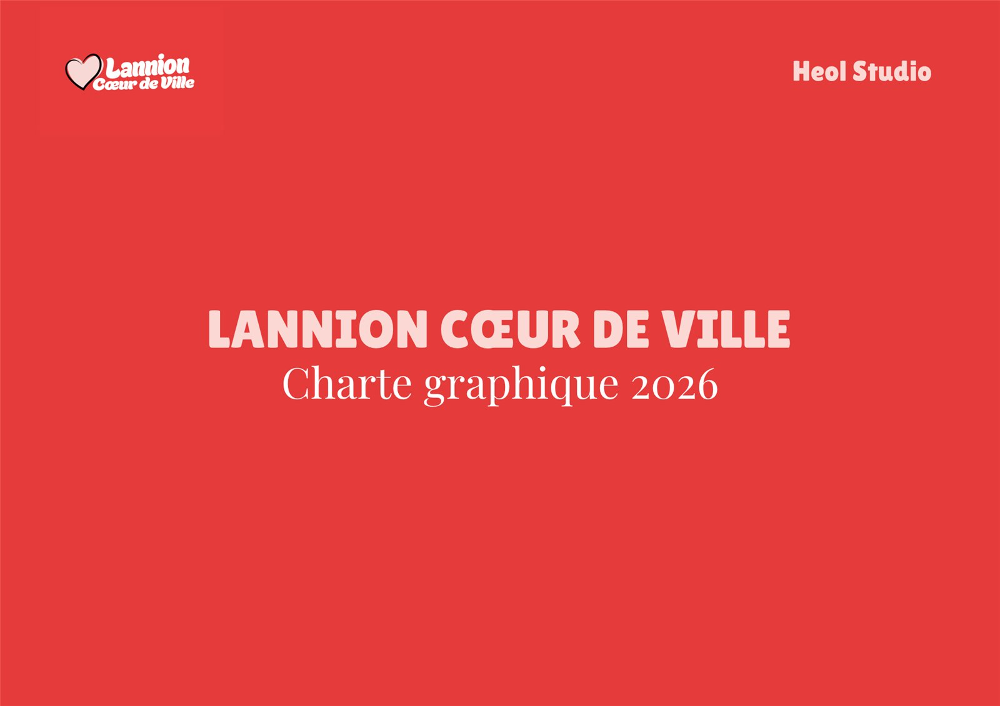
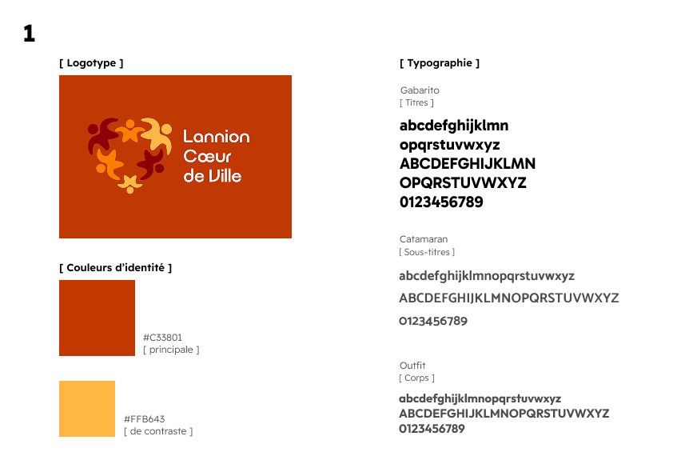
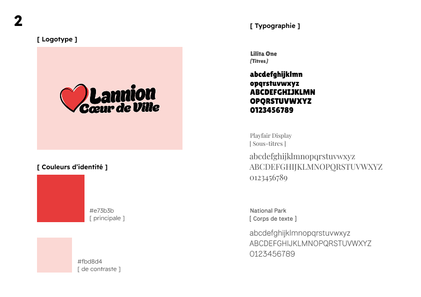
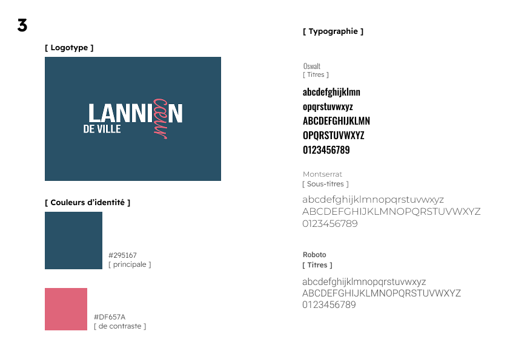
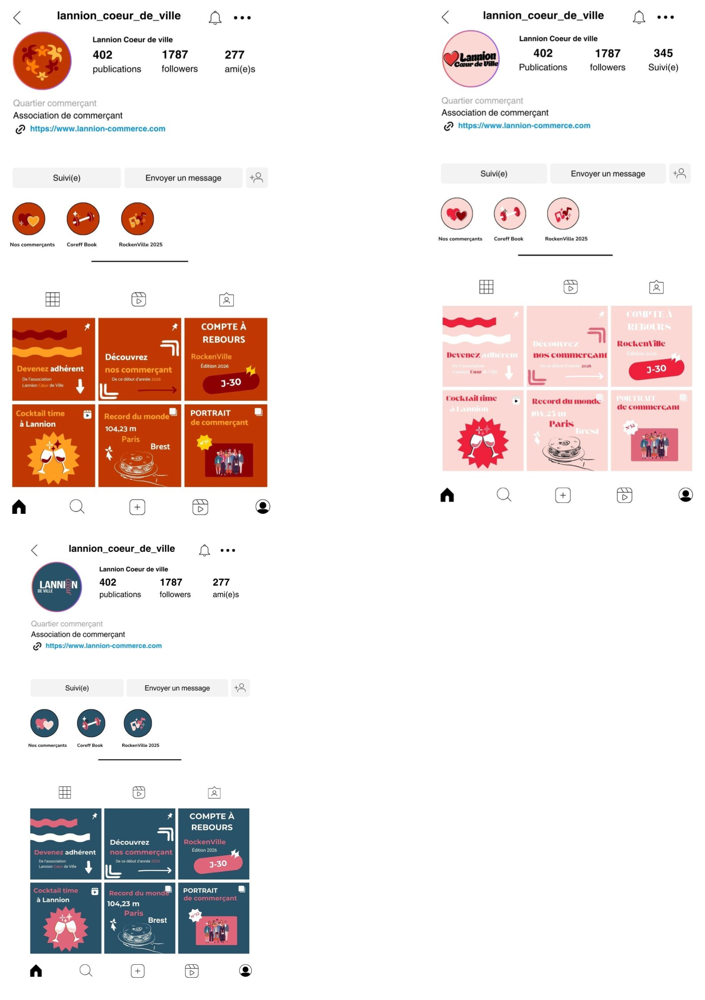
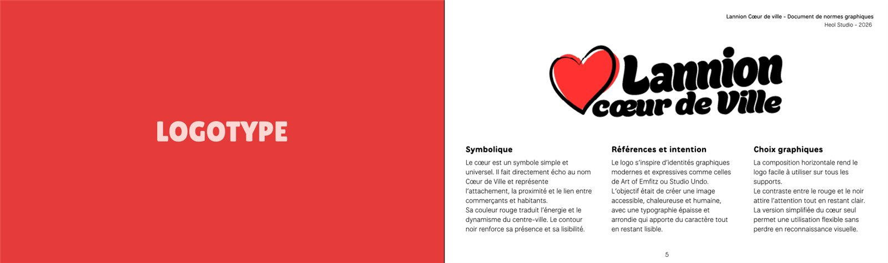
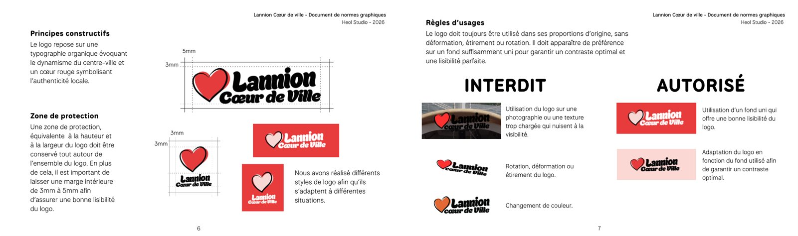
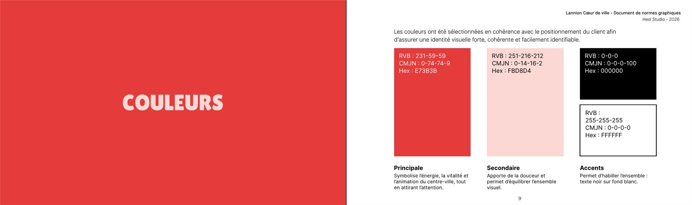
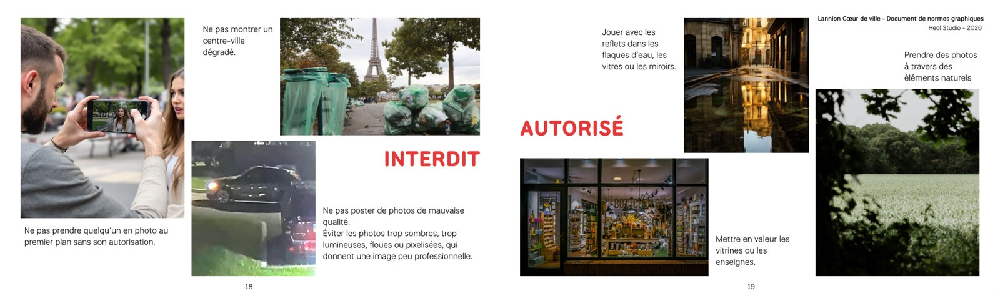
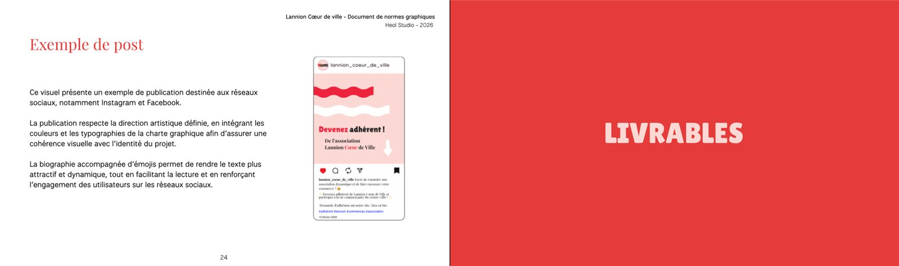

Lannion Cœur de Ville Identité visuelle
Trois pistes présentées à l'association, une retenue, puis une charte graphique pour l'appliquer partout.

Une association, mille styles.
Notre audit l'avait montré : pas de charte, et des posts qui ne se ressemblent pas. Il fallait une identité forte, mais assez simple pour être appliquée par des bénévoles et des commerçants.
Trois pistes, un cœur




Pour aider l'association à choisir, chaque piste a été testée en situation, directement sur son profil Instagram. C'est le cœur rouge qui a été retenu : un symbole simple, qui fait directement écho au nom de l'association.
La charte graphique 2026





Le logo retenu est celui qu'on reconnaît en un coup d'œil, même en tout petit.
Un logo seul ne suffit pas : le client choisit mieux sur un vrai support.
Elle doit servir à ceux qui communiqueront après nous.